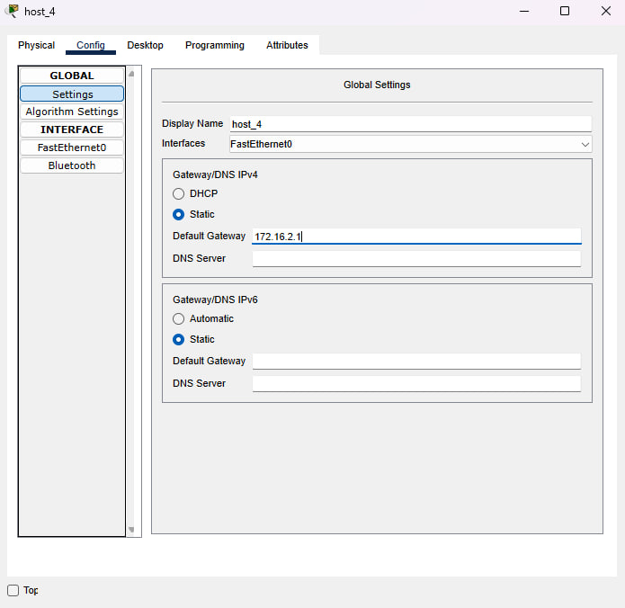

Создали новую папку my_dz1, инициализировали её как локальный репозиторий
Также подключили созданный приватный ключ
На компьютере появилась папка с файлом README.md
Для настройки компьютеров, выбираем соответствующий хост. На вкладке Config в разделе FastEthernet в полях Ipv4 Address и Subnet Mask прописываем необходимые сетевые конфигурации. Далее выбираем в этой же вкладке раздел Settings и в поле Default Gateway указываем адрес соответствующего интерфейса маршрутизатора, к которому подключен коммутатор. Для host_1:
Для host_2:
Для host_3:
Для host_4:
Нажимаем на изображение маршрутизатора. Выбираем вкладку CLI. Нажимаем Enter и набираем следующую последовательность команд для конфигурирования интерфейсов маршрутизатора:
В результате получим:
Выполним пинг с host_1 до всех других устройств
Выполним пинг с host_3 до всех других устройств:
Видно, что все пинги проходят. Все устройства связаны между собой!
CSS (Cascading Style Sheets) показывает браузеру, какие свойства есть у определенных элементов на странице: шрифт текста, размер изображений и блоков.
HTML-элементы — основа языка HTML.
Каждый HTML-документ состоит из дерева HTML-элементов и текста. Каждый HTML-элемент обозначается начальным (открывающим) и конечным (закрывающим) тегом. Открывающий и закрывающий теги содержат имя элемента.